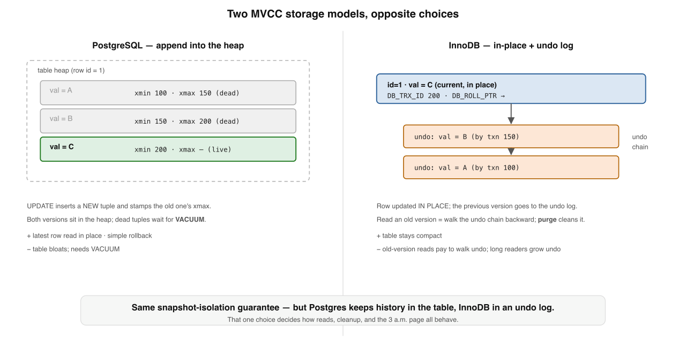
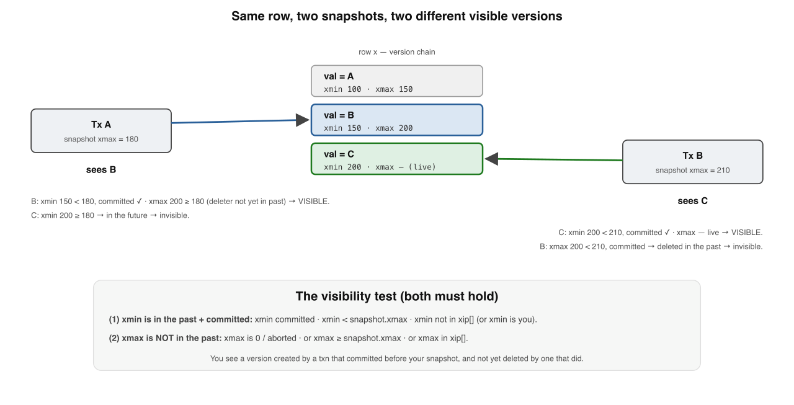
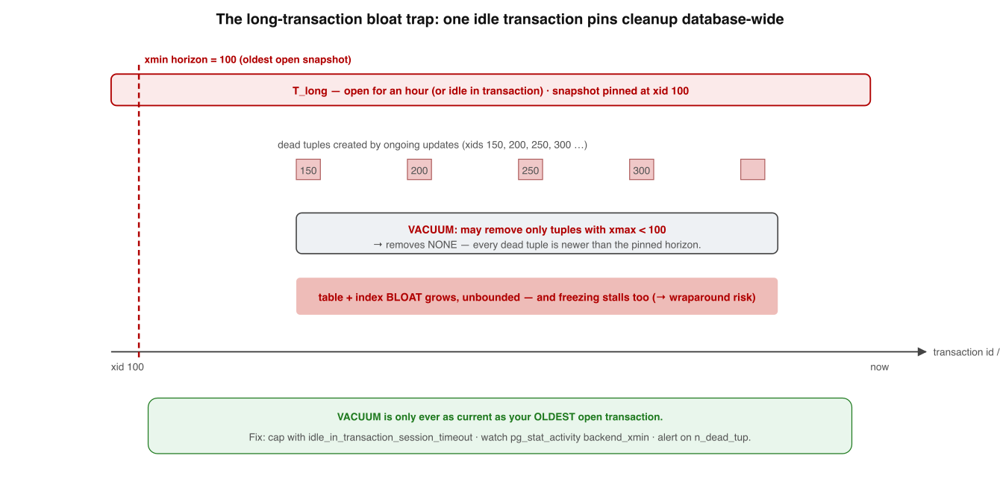

Deep dive · supplement to Book 2, Lesson 4 · visual edition
MVCC internals — version chains, visibility & the bloat trap
~25 min · 5 levels · Postgres vs InnoDB · interview questions · interactive recall
MVCC internalsTransactionsIsolationACIDMVCC
Your bar: on a whiteboard, draw how a row version is stored, how a snapshot decides which version it sees, and why one forgotten transaction bloats a whole database — then name the 3 a.m. page each engine gives you. Grounded in DDIA Ch. 7, the PostgreSQL "Concurrency Control" & "Routine Vacuuming" docs, and InnoDB "Multi-Versioning".1
Lesson 4 told you the behaviour; this unpacks the physics. One sentence holds it:
A write makes a new version, not an overwritePostgres keeps it in the heap, InnoDB in undoa snapshot reads via xmin / xmaxdead versions need cleanup — or bloat & wraparound
Memorise this banner. Two readers, same row, different versions — the whole of snapshot isolation is just xmin/xmax + "did that xid commit before me?"
1
Two ways to store versions — heap vs undo
Same isolation guarantee, opposite on-disk layout. Everything below follows from this fork.

Two MVCC storage models. PostgreSQL keeps every row version in the heap (old versions stay until VACUUM removes them). InnoDB updates the row in place and keeps the old version in an undo log, reconstructing past versions on demand.
Postgres — append to heap An UPDATE does not overwrite: it inserts a brand-new tuple (xmin=current xid) and stamps the old tuple's xmax. Both versions sit in the heap. DELETE just sets xmax.
InnoDB — update in place + undo The clustered row is modified in place; the prior version is written as an undo record reached via DB_ROLL_PTR. The table stays the latest; history lives in the undo log.
Postgres tuple headerxmin = xid that created it; xmax = xid that deleted/superseded it (0 = live). That's it — two ids per version.
InnoDB hidden fieldsDB_TRX_ID = last txn to touch the row; DB_ROLL_PTR = pointer into the undo log. Old reads walk the undo chain backward.
🗄️ Memory rule: Postgres keeps history in the table (fast latest-row reads, but it bloats and needs VACUUM); InnoDB keeps history in undo (compact table, but old reads pay to walk undo and long readers grow the log).
✗ "An UPDATE overwrites the row in place"
✓ Postgres inserts a new tuple; InnoDB writes undo first — the old version survives either way
Memory check
Where do old versions live in each engine? → Postgres heap · InnoDB undo log
What two ids are in a Postgres tuple header? → xmin, xmax
Which engine's table grows on every write? → Postgres (append); InnoDB stays compact
2
Visibility rules — how a snapshot decides
A snapshot isn't a copy of data — it's a tiny descriptor that judges each version it meets.

The visibility test. A version is visible only if its creator (xmin) committed before the snapshot, and its remover (xmax) did not. Two snapshots see different versions of the same row.
A Postgres snapshot is three things captured at snapshot time, checked against the commit log (pg_xact/CLOG):
Plain English: you see a version created by a txn that committed before your snapshot, and not yet deleted by a txn that committed before your snapshot. That is the whole of snapshot isolation.
Read Committed A fresh snapshot per statement → can see others' commits between statements.
Repeatable Read / SI One snapshot taken at first read, reused all txn → one consistent view.
InnoDB read view Same logic: low-water id, high-water id, active set — applied while walking undo until DB_TRX_ID is visible.
Cost of the check Per tuple, a commit-log (CLOG) lookup to learn "did that xid commit or abort?"
👁️ Memory rule: Visible ⇔ xmin committed in the past AND xmax not committed in the past — two header fields plus one commit-log lookup.
✗ "A snapshot copies the rows it will read"
✓ It stores xmin/xmax/xip[ ] and judges each version on the fly
Memory check
Two conditions for a tuple to be visible? → xmin past+committed; xmax not past
Why does Read Committed see new commits mid-txn? → fresh snapshot per statement
What does the engine consult to test commit/abort? → the commit log (CLOG / pg_xact)
3
VACUUM, purge & the long-transaction bloat trap
Dead versions don't vanish on their own. One forgotten transaction can bloat a whole database — silently.

The long-transaction bloat trap. VACUUM can only remove versions older than the oldest running transaction's snapshot — the xmin horizon. One idle-in-transaction connection pins that horizon, so dead tuples pile up unbounded, with no error.
When is a version removable? Once invisible to every snapshot that could ever run again — its xmax committed before the oldest still-running txn.
The xmin horizon The xmin of the oldest live txn. VACUUM cannot touch anything that died after it — across the whole DB.
VACUUM vs VACUUM FULL Plain VACUUM (usually autovacuum) frees space for reuse in the table; the file doesn't shrink. Only VACUUM FULL rewrites & shrinks, under an exclusive lock.
InnoDB equivalent The purge thread reclaims undo + delete-marked rows; a long read view shows up as a growing history list length.
🧹 Memory rule: Your cleanup is only ever as current as your oldest open transaction — one idle in transaction connection bloats the entire database, with no error.
✗ "Plain VACUUM returns disk to the OS"
✓ It marks space reusable inside the table; only VACUUM FULL shrinks the file
Defenses (operational, not magical): cap age with idle_in_transaction_session_timeout; watch pg_stat_activity for ancient xact_start / backend_xmin; alert on n_dead_tup. InnoDB: alert on history list length.
Memory check
What pins the xmin horizon? → the oldest still-running transaction
Does plain VACUUM shrink the file? → no; only VACUUM FULL does
InnoDB symptom of the same bug? → growing history list length
4
The transaction-ID wraparound time bomb
PostgreSQL-specific, famous, and has taken down real companies. The fix is freezing.
Circular comparison is what lets visibility work without an ever-growing counter — and it's the landmine. Freezing defuses it.
The bomb 32-bit xids (~4.2B), compared circularly. After ~2B newer xids, an old xmin looks future → the row vanishes. Silent, catastrophic data loss.
The defenseFreezing: VACUUM marks old tuples "committed & visible to everyone — ignore xmin." A frozen tuple is wrap-immune.
Escalation As the oldest unfrozen xid ages (autovacuum_freeze_max_age, default 200M), Postgres runs aggressive anti-wraparound autovacuums.
The hard stop If freezing falls too far behind, Postgres refuses new xids and goes read-only rather than risk corruption — "DB stopped accepting writes."
⏰ Memory rule: Wraparound is prevented by freezing — marking old tuples visible-to-all so their soon-to-wrap xmin is ignored. Fall behind and the database goes read-only.
✗ "Wraparound is fixed by resetting the counter to zero"
✓ It's prevented by freezing old tuples; nothing resets the global xid counter
The same long transaction that bloats (§3) also holds back freezing — nudging you toward wraparound. The postmortems (Sentry, Mailchimp, others) all read the same: autovacuum couldn't keep up.5
Memory check
How wide are xids, and how compared? → 32-bit, circularly (~2B past / 2B future)
What does freezing do? → marks tuples visible-to-all; ignore xmin
What happens if freezing falls too far behind? → Postgres goes read-only
5
Loose ends — indexes, SSI & which model wins
Three things to know before you close the book.
The bug is always the same shape — a long transaction starves cleanup — but it wears a different costume in each engine.
Indexes carry no version A PG index points at a heap tuple; visibility lives in the heap, so index-only scans consult the visibility map. InnoDB secondary entries are delete-marked on update and often force a drop to the clustered index + undo.
Indexed-column updates are pricey Under MVCC, updating an indexed column writes new index entries in both engines — extra cost, extra bloat.
SSI is built on MVCC PostgreSQL SERIALIZABLE (SSI) runs on ordinary snapshots and additionally tracks read/write dependencies, aborting one txn on the dangerous-structure pattern that causes write skew.4
Pick your discipline Knowing your engine tells you what you owe it: VACUUM/freeze monitoring for Postgres, undo/history-list + purge monitoring for InnoDB.
🧩 Memory rule: MVCC is the substrate; SSI is the safety layer over it. Neither storage model wins — they trade, and a long transaction starves cleanup in both.
✗ "Serializable replaces MVCC with locks"
✓ Postgres SSI runs on MVCC snapshots + dependency tracking — same substrate, extra checks
Memory check
Why is an index-only scan not enough alone? → indexes carry no visibility; consult the visibility map
What does SSI add on top of MVCC? → read/write dependency tracking + aborts
Which storage model is "best"? → neither; they trade failure modes
Where each piece bites — production map
The concept, the symptom you actually see, and the lever you pull. This is the difference between reading MVCC and operating it.
Pattern to notice: nearly every MVCC incident is one long / idle-in-transaction connection starving cleanup. Find it in pg_stat_activity first.
Retrieval practice — answer from memory
Reading builds fluency (feels familiar). Recall builds storage (lasts). Pick before you peek — instant feedback.
Q1. On an UPDATE, PostgreSQL and InnoDB differ in that…
Q2. A PostgreSQL tuple is visible to your snapshot only when its…
Q3. A table bloats badly while one connection sits idle-in-transaction because…
Q4. Transaction-ID wraparound is prevented by VACUUM…
Q5. The one-line trade-off between the two storage models is…
Q6. PostgreSQL SERIALIZABLE (SSI) relates to MVCC how?
Reconstruct the deep dive from a blank page
Write the five levels in order, one line each, with nothing on screen. Then reveal and compare — gaps are your next drill.
1 Storage: PG appends to heap (xmin/xmax), InnoDB updates in place + undo (DB_TRX_ID/DB_ROLL_PTR) ·
2 Visibility: visible ⇔ xmin past+committed AND xmax not-past; RC = fresh snapshot/stmt, RR = one snapshot ·
3 Cleanup: VACUUM/purge can't pass the xmin horizon = oldest open txn → one idle txn bloats the whole DB ·
4 Wraparound: 32-bit circular xids; freezing marks tuples visible-to-all or DB goes read-only ·
5 Loose ends: indexes carry no visibility; SSI sits on MVCC; neither model wins — they trade.
I'm your teacher — ask me anything. Say "grill me on MVCC internals" for mixed no-clue questions, or hand me a real incident ("the DB went read-only", "a table is 4× its row count") and I'll walk you from symptom to root cause to the lever you pull. Want the next deep dive — SSI & write skew? Just ask.
Interview — pick your bar
Answer out loud in ~60s, then reveal. Core = recall · Senior = trade-offs & failure modes · Staff = synthesis under ambiguity · System Design = open design round (a different axis, not a harder level).
What does multi-version storage mean — what happens to old data when a row is updated?
Hit these points: an UPDATE never overwrites in place — it creates a new version of the row and keeps the old one around → in Postgres the new tuple is inserted into the heap with xmin = the current xid and the old tuple's xmax is stamped; the old version lives until VACUUM removes it → in InnoDB the clustered row is changed in place but the prior image is written to the undo log, reachable via DB_ROLL_PTR → so a logical row is really a chain of physical versions → "no overwrite" is the core idea — both engines retain the prior version so concurrent readers can still see it.
What exactly is a snapshot, and what is in it?
Hit these points: a snapshot is the set of information a txn uses to decide which versions it may see → in Postgres it's xmin (oldest still-running xid), xmax (next xid not yet assigned), and xip[] (the list of in-progress xids) → together they define "committed as of this instant" → Read Committed takes a fresh snapshot per statement; Repeatable Read / SI takes one snapshot at the first read and reuses it for the whole txn → the snapshot is the txn's frozen view of the commit timeline — it never sees writes that commit after it.
State the visibility rule: how does a reader decide a given version is visible?
Hit these points: for each tuple the reader checks two gates against its snapshot → the creating xid (xmin) must be committed and in the past (not in xip[], below xmax) → the deleting xid (xmax) must be absent, aborted, or still in the future relative to the snapshot → if both hold, that version is the one this reader sees; otherwise it walks to the next version in the chain → commit status comes from the commit log (clog) → "visible = created-by-a-committed-past-txn AND not-yet-deleted-as-of-my-snapshot."
What is version GC — VACUUM in Postgres, purge in InnoDB — and why is it needed?
Hit these points: because updates and deletes leave old versions behind, something must reclaim the ones no live snapshot can ever see again → Postgres VACUUM marks dead tuples reusable (and updates the visibility map / freezes old xids); plain VACUUM frees space for reuse but VACUUM FULL is what actually shrinks the file → InnoDB's purge thread reclaims undo records and delete-marked rows once no read view needs them → the cleanup ceiling is the oldest live transaction's horizon: nothing that died after it can be removed → without GC the table bloats and reads slow down.
Walk me through exactly what happens on disk when you UPDATE one row in Postgres vs InnoDB.
Hit these points: Postgres inserts a new tuple (xmin = current xid), stamps the old tuple's xmax, and writes new index entries unless HOT applies; the old version stays in the heap for VACUUM → InnoDB modifies the clustered-index row in place but first writes an undo record reachable via DB_ROLL_PTR, and old readers walk the undo chain backward → key contrast: Postgres keeps history in the heap (cheap update, expensive cleanup, index churn), InnoDB keeps history in undo (in-place update, cheaper indexes, purge pressure) → in neither case is the prior version destroyed at write time.
A table is 5× the size of its live row count and seq scans are slow. Diagnose it.
Hit these points: bloat from dead tuples VACUUM can't reclaim → find the cause: an old or idle in transaction connection, or a long analytics query, pinning the xmin horizon so nothing that died after it can be removed — and the effect is DB-wide, not just that table → check pg_stat_activity (xact_start, backend_xmin) and n_dead_tup → fix the offending txn, don't just run VACUUM → remember plain VACUUM frees space for reuse but won't shrink the file — only VACUUM FULL does, and it takes an exclusive lock.
Why is updating an indexed column more expensive under MVCC — in both engines?
Hit these points: a new version generally means new or changed index entries → Postgres writes new index tuples unless HOT applies (HOT needs the update to stay on the same page and touch no indexed column) → index bloat; and because visibility lives in the heap, index-only scans depend on the visibility map → InnoDB delete-marks the old secondary-index entry and inserts a new one, and secondary-index reads often drop to clustered + undo to find the visible version → net effect in both: write amplification on the write path plus extra read cost — which is why "just add an index" isn't free under heavy updates.
Connect a long-running analytics query to table bloat, and give the operational fix.
Hit these points: the query's snapshot pins the xmin horizon, so VACUUM can't reclaim anything that died after the query started — bloat grows for the whole duration of that one read → it also holds back freezing, so it's a wraparound risk too → the read path is fine (snapshots are cheap); the damage is to cleanup → levers: idle_in_transaction_session_timeout and statement timeouts to bound txn age, route heavy analytics to a read replica, and alert on the oldest xact_start / backend_xmin (and InnoDB history list length) → the rule: cleanup is only as current as your oldest open transaction.
"The database suddenly stopped accepting writes." What's your first hypothesis and how does it tie to MVCC?
Hit these points: first hypothesis: transaction-ID wraparound — Postgres went read-only to avoid silent data loss → mechanism: xids are finite and compared modulo-2^31, so old versions must be frozen ("visible to all, ignore xmin") before the oldest unfrozen xid ages past the safety threshold → root cause is always "freezing fell behind": autovacuum disabled or starved, or blocked by a long-running txn pinning the horizon → recovery: let anti-wraparound autovacuum run (or VACUUM in single-user mode), then kill the long txn and fix monitoring → prevention: never disable autovacuum, alert on max xid age and oldest open txn → cite the Sentry / Mailchimp postmortems — every one is "autovacuum couldn't keep up."
Postgres heap-history vs InnoDB undo-history — how does that one design choice ripple through operations?
Hit these points: the storage location of old versions sets the whole operational profile → Postgres keeps history in the heap: cheap in-place-ish writes but cleanup (VACUUM) competes for I/O, index entries churn, and a pinned horizon bloats the live table → you monitor n_dead_tup, autovacuum lag, backend_xmin, and freeze age, and you never disable autovacuum → InnoDB keeps history in undo: cheaper indexes and in-place clustered updates, but a long read view grows the undo/history list and purge falls behind → you monitor history list length and purge lag, and keep undo bounded → synthesis: different janitor, same root cause — a long transaction starving cleanup → the staff move is operating each engine to its specific failure mode rather than treating MVCC as one thing.
How is PostgreSQL SERIALIZABLE built on top of MVCC, and what does it add — and cost?
Hit these points: SSI runs txns on ordinary MVCC snapshots with no extra locks on reads, then additionally tracks read/write dependencies → when it detects the dangerous structure (rw-antidependencies forming a potential cycle) that causes write skew, it aborts one txn with SQLSTATE 40001 → so MVCC is the substrate and SSI is an optimistic safety layer over it, not a replacement → cost: it's conservative (aborts some serializable histories), abort rate climbs with contention, and it consumes predicate-lock (SIRead) memory → operational contract: the app must retry on 40001 and keep txns short and reads selective → the guarantee is single-node only → the synthesis: SSI buys serializability without read locks by paying in aborts and lock memory instead of blocking.
Design-round framework — drive any MVCC / concurrency-storage prompt through these, out loud:
Workload shape — read/write ratio, txn duration, hot rows, how much history readers need.
Versioning model — append-in-heap (Postgres-style) vs in-place + undo (InnoDB-style) and what each costs.
Visibility & snapshots — per-statement vs per-txn snapshot; what determines a version is visible.
Garbage collection — who reclaims dead versions, and what pins the cleanup horizon.
Observability — oldest open txn, dead-tuple / history-list growth, autovacuum or purge lag.
Design the version-storage and GC strategy for an append-mostly audit-log table that is rarely updated but read by long analytics scans.
A strong answer covers: the workload is insert-heavy with few updates, so version churn is low — the real risk is long read scans, not write amplification → because updates are rare, dead-tuple bloat from updates is minimal; the threat is a long analytics snapshot pinning the cleanup horizon DB-wide and holding back freezing → defenses: run those scans on a read replica or under READ ONLY DEFERRABLE for a safe snapshot with no SSI cost, and cap them with statement timeouts → aggressively freeze old, immutable rows (they never change) so wraparound is a non-issue and they're skipped by VACUUM → partition by time so old partitions become read-only/freeze-once and cleanup stays local → observability: alert on oldest xact_start / backend_xmin and max xid age → trade-off: replica isolation (fresh-enough, isolates bloat) vs same-DB simplicity (one long scan can bloat the primary).
You're choosing between a Postgres-style (heap history) and an InnoDB-style (undo history) engine for a write-heavy, high-contention OLTP service. Walk the decision.
A strong answer covers: clarify the workload first — heavy updates on hot rows, short txns, many indexes → heap-history (Postgres-style): updates are cheap but every non-HOT update churns index entries and leaves dead tuples, so under heavy writes you pay in VACUUM I/O, bloat, and a wraparound/freeze obligation; you must tune autovacuum hard and never let a long txn pin the horizon → undo-history (InnoDB-style): in-place clustered updates and cheaper secondary indexes suit write-heavy workloads, but long read views grow the undo/history list and reads via secondary indexes pay a clustered+undo hop → for write-heavy high-contention OLTP the undo model often operates more smoothly, provided you keep read views short so purge keeps up → name the decisive trade-off: VACUUM/bloat discipline vs purge/history-list discipline → whichever you pick, the binding constraint is the same — bound transaction duration, because the oldest open txn sets the cleanup cost; instrument it before deciding.
★ Cheat sheet — internal → what it means
Mental models: Row = chain of versions · UPDATE = new version, never overwrite · Postgres = history in the heap · InnoDB = history in undo · Snapshot = xmin/xmax/xip[] judging each version · Visible = xmin past+committed AND xmax not-past · xmin horizon = oldest open txn = cleanup limit · VACUUM/purge = the janitor · Freezing = wraparound vaccine · SSI = safety layer over MVCC.
Serializable on MVCC + read/write dependency tracking
Three rules for the on-call chair
① Cleanup is only as current as your oldest open transaction — hunt it in pg_stat_activity first. ② Plain VACUUM frees-for-reuse; only VACUUM FULL shrinks the file (exclusive lock). ③ Never disable autovacuum — "DB went read-only" is wraparound, and it's always "autovacuum couldn't keep up."
★ Review guide & what to read next
5-min (weekly) Don't re-read — recall. Redraw the version chain with xmin/xmax; state the two visibility gates; say why one idle txn bloats the whole DB; name the wraparound read-only stop.
30-min (when stalled) Blank-page reconstruct all five levels; re-derive how heap-vs-undo forces VACUUM-vs-purge; then trace one real incident from symptom → xmin horizon → lever.